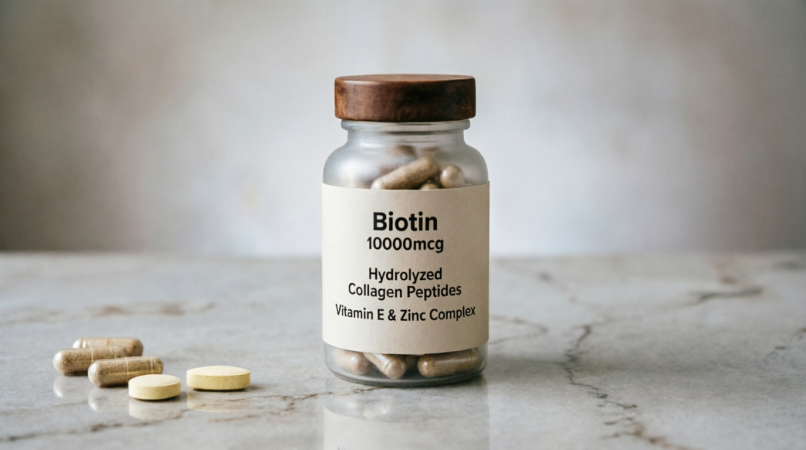
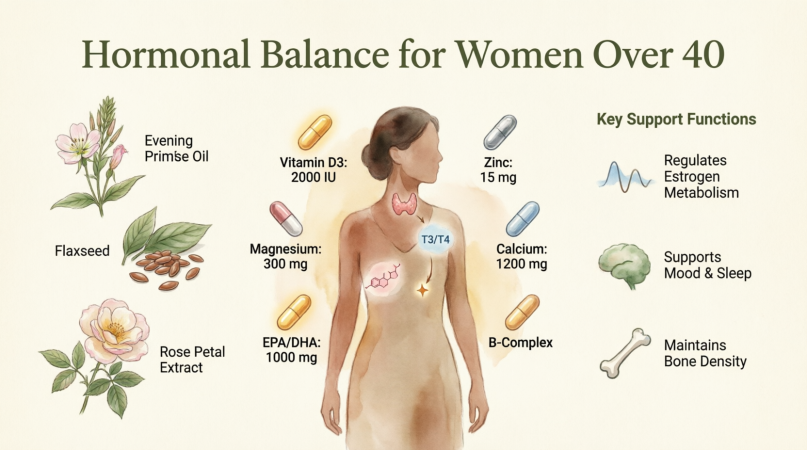
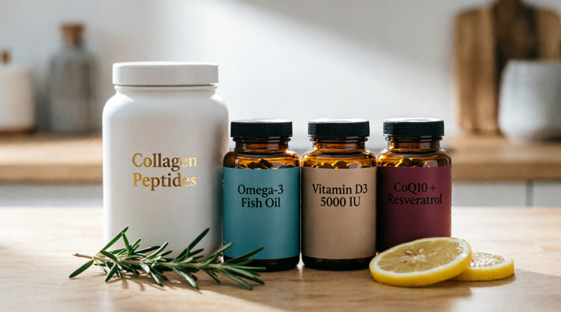
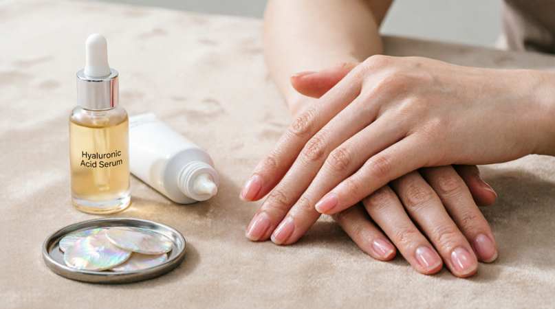

Introduction: Why Your Body Needs Different Fuel After 40

Key supplements for optimal health after 40
Turning 40 is not just a birthday; it is a biological pivot point. For most women, this decade marks the beginning of perimenopause. During this transition, estrogen levels begin to fluctuate and eventually decline. Estrogen is not just a reproductive hormone; it is a master regulator of collagen production, hair growth cycles, bone density, and mood stability.
When estrogen drops, three things happen simultaneously:
- Collagen synthesis slows down (leading to skin thinning and wrinkles)
- Androgens (testosterone) become relatively dominant (leading to hair thinning on the scalp but potential hair growth on the face)
- Insulin sensitivity may decrease (affecting weight management and energy)
This guide curates the essential, evidence-based supplements to support your body through this transition, targeting the "Big Four": Hair, Skin, Nails, and Hormones.
Pillar 1: Hormonal Harmony & Stress Management
The Foundation. If your hormones are chaotic, your hair and skin will suffer regardless of topical treatments.

Key nutrients for hormonal balance
1. Magnesium Glycinate
The "Master Mineral" for Relaxation and Sleep
Why it's critical after 40:
Magnesium deficiency is rampant in women over 40. It is required for over 300 enzymatic processes, including the regulation of cortisol (stress hormone) and the conversion of food into energy. High cortisol steals resources from progesterone production, worsening perimenopausal symptoms.
Benefits:
- Improves sleep quality (crucial for cellular repair)
- Reduces anxiety
- Alleviates muscle tension
- Supports bone density
💊 Dosage & Tips:
Choose Magnesium Glycinate or Bisglycinate. Avoid Magnesium Oxide (poor absorption, laxative effect). Take 200–400mg before bed.
2. Vitamin D3 + K2
The Hormone Modulator
Why it's critical after 40:
Vitamin D is actually a pro-hormone. Receptors for Vitamin D are found in ovarian tissue. Low levels are linked to heavier periods, mood swings, and increased risk of autoimmune issues. K2 ensures calcium goes to your bones, not your arteries.
Benefits:
- Supports immune function
- Mood stabilization
- Bone health
- Insulin sensitivity
💊 Dosage:
Aim for blood levels of 40–60 ng/mL. Typical supplementation is 2,000–5,000 IU daily, always paired with K2 (MK-7 form).
3. Omega-3 Fatty Acids (High EPA/DHA)
The Anti-Inflammatory Fire Extinguisher
Why it's critical after 40:
Chronic low-grade inflammation increases with age ("inflammaging"). Omega-3s help combat this, supporting brain health (combating "brain fog") and keeping cell membranes fluid and hydrated.
Benefits:
- Reduces joint pain
- Supports heart health
- Improves skin lipid barrier
- May reduce hot flash severity
💊 Dosage:
Look for a high-quality fish oil or algae oil providing at least 1.5g – 2g of combined EPA/DHA daily.
4. Adaptogens: Ashwagandha or Rhodiola Rosea
The Stress Buffers
Why it's critical after 40:
Perimenopause is stressful on the adrenal glands. Adaptogens help the body resist stressors.
Benefits:
- Ashwagandha: helps balance cortisol and support thyroid function (TSH/T4)
- Rhodiola: better for fatigue and mental burnout
⚠️ Caution:
Cycle these supplements (e.g., 5 days on, 2 days off) to prevent tolerance.
Pillar 2: Skin Elasticity & Hydration
Combating the "Estrogen Drop" Effect on Collagen

Premium anti-aging supplements for skin health
5. Hydrolyzed Collagen Peptides (Types I & III)
The Building Blocks
Why it's critical after 40:
Studies show women lose up to 30% of their skin collagen in the first five years of menopause. Topical creams cannot replace lost structural protein; ingestion can.
Benefits:
- Clinically shown to improve skin elasticity
- Increases hydration
- Improves dermal collagen density
- Supports joint health
💊 Specialist Tip:
Look for Verisol® or similar patented bioactive peptides. Dosage: 2.5g – 10g daily. Must be taken consistently for 8–12 weeks to see results.
6. Hyaluronic Acid (Oral)
The Internal Moisturizer
Why it's critical after 40:
Estrogen helps skin retain moisture. As it declines, skin becomes dry and crepey. Oral HA has been shown to reach the skin layers and bind water.
Benefits:
- Improves skin hydration from within
- Reduces eye wrinkles
- Supports joint lubrication
💊 Dosage:
120–240mg daily
7. Astaxanthin
The Internal Sunscreen
Why it's critical after 40:
This potent carotenoid antioxidant protects skin cells from UV damage and oxidative stress, which accelerate aging.
Benefits:
- Improves skin texture
- Reduces age spots
- Enhances skin elasticity
- Gives a subtle, healthy glow without staining skin orange
💊 Dosage:
4–12mg daily
Pillar 3: Hair Thickness & Growth
Addressing Thinning and Texture Changes

Essential supplements for hair health and growth
8. Biotin (Vitamin B7) + Silica
The Keratin Supporters
Why it's critical after 40:
While Biotin deficiency is rare, supplementation can strengthen keratin infrastructure. Silica is essential for collagen formation and hair strength.
Benefits:
- Reduces hair brittleness and breakage
- Supports nail hardness
💊 Specialist Tip:
Don't overdo Biotin (max 5,000mcg). High doses can interfere with lab tests (thyroid/troponin). Pair with Silica (from Bamboo extract or Orthosilicic Acid) for better structural integrity.
9. Saw Palmetto (Serenoa repens)
The DHT Blocker
Why it's critical after 40:
As estrogen drops, relative testosterone rises. Testosterone converts to DHT (Dihydrotestosterone), which shrinks hair follicles on the scalp (female pattern hair loss).
Benefits:
- Mildly inhibits 5-alpha-reductase, the enzyme that creates DHT
- Helps maintain hair follicle size
⚠️ Caution:
Consult a doctor if you are on birth control or hormone therapy.
10. Iron (Ferritin Check Required)
The Oxygen Carrier
Why it's critical after 40:
Many women in their 40s experience heavy periods due to perimenopausal hormonal fluctuations, leading to iron depletion. Low ferritin (<40 ng/mL) is a leading cause of hair shedding.
Benefits:
- Ensures hair follicles receive enough oxygen to grow
💊 Specialist Tip:
Do not supplement iron unless you have tested your Ferritin levels. Excess iron is dangerous. If low, use Iron Bisglycinate (gentler on the stomach) with Vitamin C.
Pillar 4: Nail Strength
Often Overlooked, But a Key Health Indicator

Nail health and beauty supplements
11. MSM (Methylsulfonylmethane)
The Sulfur Donor
Why it's critical after 40:
Nails are made of keratin, which is rich in sulfur. MSM provides bioavailable sulfur.
Benefits:
- Strengthening brittle nails
- Reducing splitting/peeling
- Supporting joint/connective tissue health
💊 Dosage:
1–3g daily. Often found in combination with Collagen.
The "Best-of" Daily Stack Example
If you were to simplify this into a daily routine, here is how a specialist might structure it for maximum absorption and synergy:

Your complete daily supplement protocol
| Time of Day | Supplement | Purpose |
|---|---|---|
| Morning (with Breakfast) |
• Vitamin D3 + K2 • Omega-3s • B-Complex (with Biotin) • Collagen Peptides |
Fat-soluble vitamins need fat. B-vitamins provide energy. Collagen can be mixed in coffee/smoothie. |
| Lunch |
• Astaxanthin • Hyaluronic Acid • Saw Palmetto (if using) |
Antioxidants work well mid-day. |
| Evening (Dinner) |
• Magnesium Glycinate • Zinc (if needed) |
Magnesium promotes relaxation and sleep. Zinc supports immune/hair health (take with food to avoid nausea). |
| Before Bed | Ashwagandha (optional) | To lower cortisol for deep restorative sleep. |
Lifestyle Synergies: Supplements Are Not Magic Pills
As a nutritional specialist, I must emphasize that supplements act as insurance, not replacement, for a healthy lifestyle. For women over 40, these three factors are non-negotiable:
- Protein Intake: You need more protein now than you did at 20 to prevent muscle loss (sarcopenia) and provide amino acids for hair/skin. Aim for 1.2g – 1.6g of protein per kg of body weight.
- Strength Training: Resistance training boosts growth hormone and insulin sensitivity, directly impacting body composition and bone density.
- Gut Health: If your gut is inflamed, you won't absorb these supplements. Include fermented foods (kimchi, kefir, sauerkraut) and fiber daily.
Frequently Asked Questions
Skin/Hydration: 4–8 weeks
Hair/Nails: 3–6 months (hair grows slowly; nails take 6 months to fully replace)
Hormones/Energy: 2–4 weeks for sleep/mood; 3 months for cycle regulation
Start with the foundations: Magnesium, Vitamin D3/K2, Omega-3s, and Collagen. Add others based on specific symptoms (e.g., add Saw Palmetto only if hair thinning is evident).
These can be helpful for hot flashes for some women, but they are controversial for those with a history of estrogen-positive breast cancer. Always discuss with your oncologist or gynecologist before using phytoestrogens.
Ready to Transform Your Health?
Start with one change, track how you feel, and build from there.
Your body is changing, but with the right support, it can thrive.
📅 Last Updated: May 2026
Clinical Nutritionist Guide